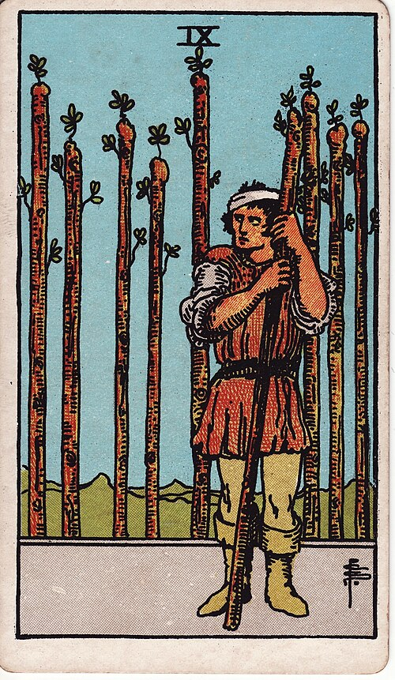

| Arcana | Minor |
| Suit | Wands |
| Element | Fire |
| Attribution | Moon in Sagittarius |
Nine of Wands
In shortBattered but still standing, and nearly there.
Upright
You have been through it, you are guarded now, and you have one more push in you. This is endurance well past the point where it stopped being enjoyable — and you are closer to the end than it feels. The wariness is earned. The card just cautions against letting it become permanent.
Reversed
The defences have outlasted the threat. This is burnout, suspicion of people who have not done anything, or giving up in the final stretch because there is nothing left in the tank. It asks honestly whether you are being attacked or simply exhausted, because those need very different responses.
The turn
One more round, then rest properly. Do not mistake vigilance for progress.
Reading with your own deck?
Sage records the cards you actually pull, writes the reading, keeps every one, and shows you what keeps returning across them. Free, private, no account.